영어 단어는 왜 뜻이
여러 개일까?
가장 많이 쓰는 단어 100개가 영어 문장의 절반을 채운다. 그 안에서 뜻이 헷갈리는 30개를 골랐다. 단어 하나에 그림 하나다.
종이책으로 나올 책이에요. 책보다 먼저 여기서 다 볼 수 있어요. 나오면 알림 받기 →
방향과 마음의 화살표
17단어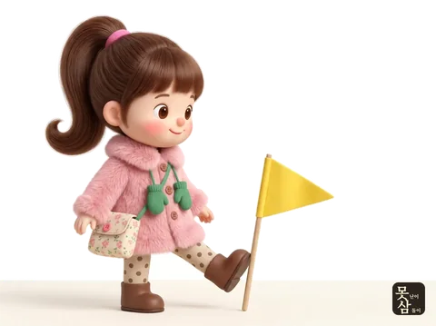
TO닿는 곳이 있는 화살표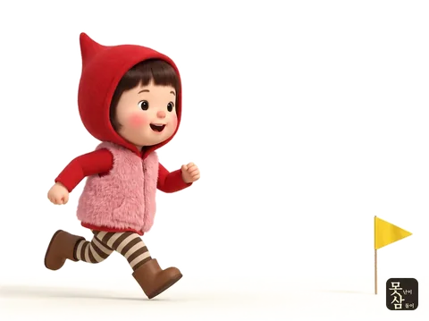
FOR내 마음이 가는 방향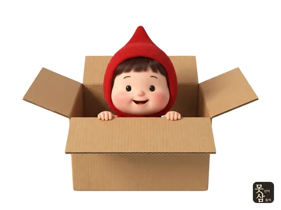
IN테두리 안에 있다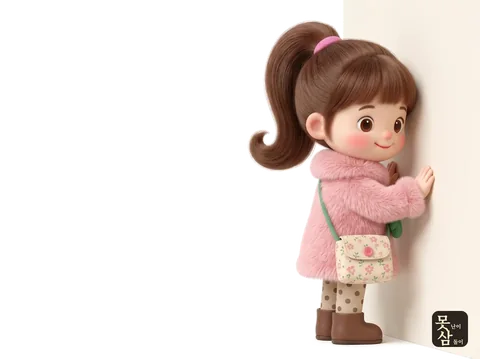
ON붙어 있다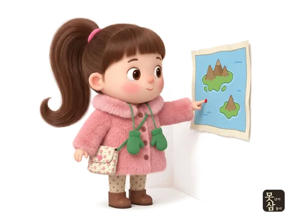
AT콕 찍은 한 점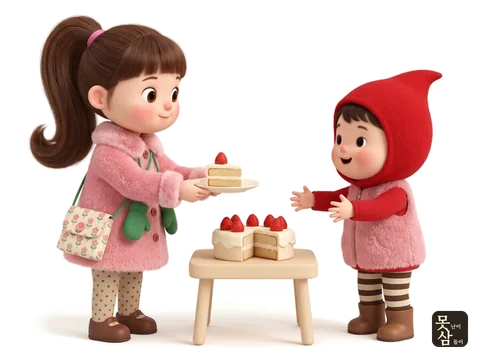
OF큰 덩어리에서 나온 조각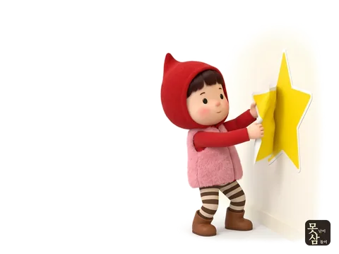
OFF붙어 있다가 떨어져 나간다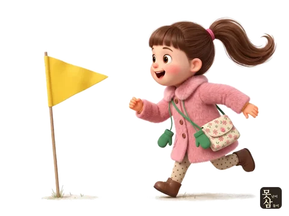
FROM화살표의 꼬리, 출발한 곳WITH딱 붙어서 함께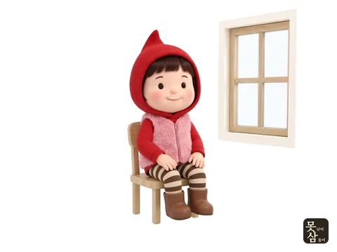
BY바로 곁에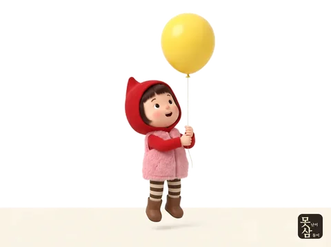
UP위로 가는 화살표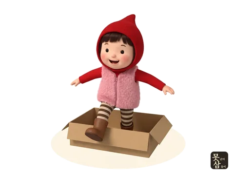
OUT테두리 밖으로 나오는 화살표INTO테두리 안으로 들어가는 화살표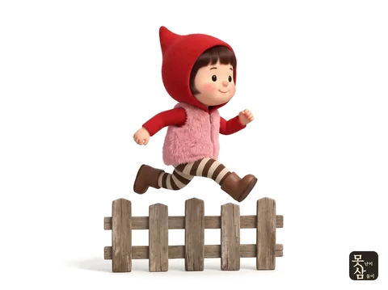
OVER떨어져서 위로 넘어간다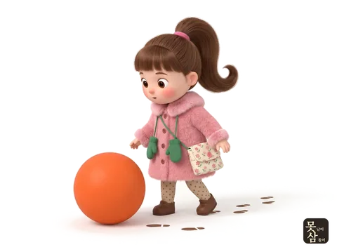
ABOUT한 점의 둘레를 빙 돈다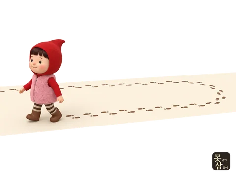
BACK왔던 뒤쪽으로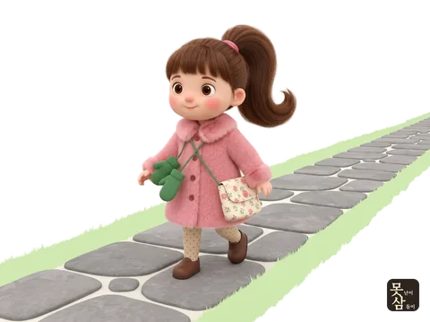
WAY내가 밟고 가는 길내 몸으로 움직이는 기본 동작
13단어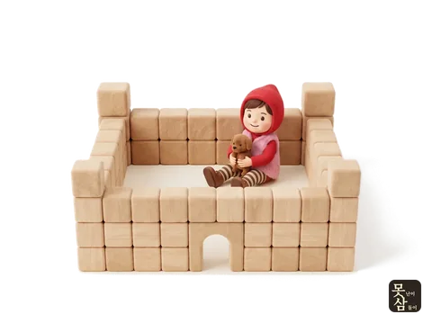
HAVE내 성 안에 있다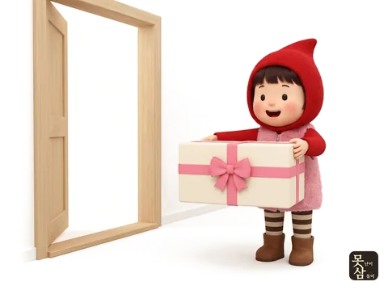
GET내 상황이 달라진 순간TAKE내가 손을 뻗어 집어 온다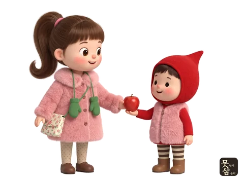
GIVE내 손에서 네 손으로 넘긴다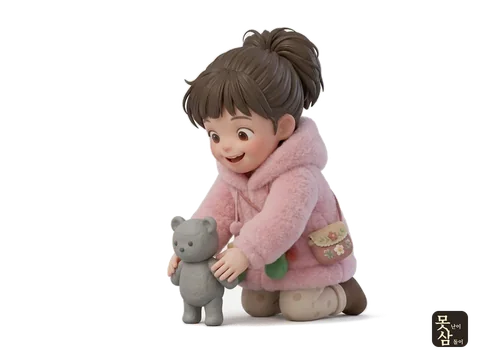
MAKE없던 걸 내 손으로 만든다DO있는 일을 내 손으로 해낸다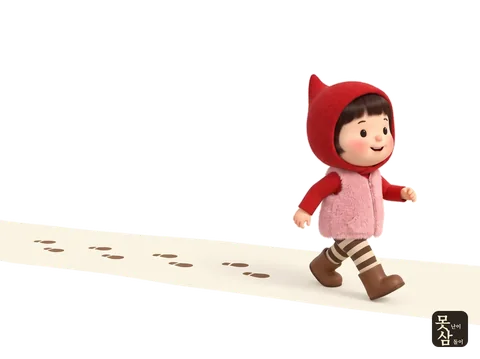
GO여기서 떠나 저쪽으로 간다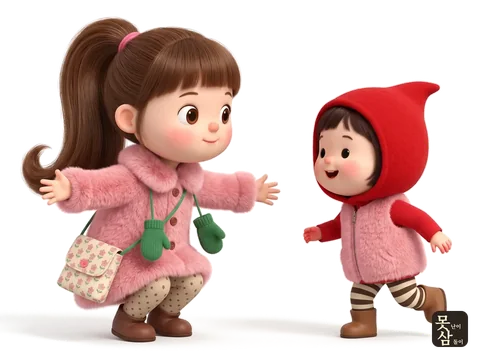
COME기다리는 쪽으로 다가온다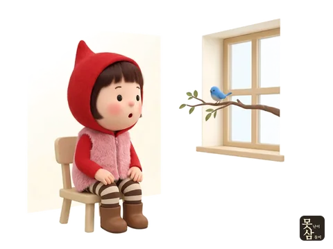
SEE눈에 들어온다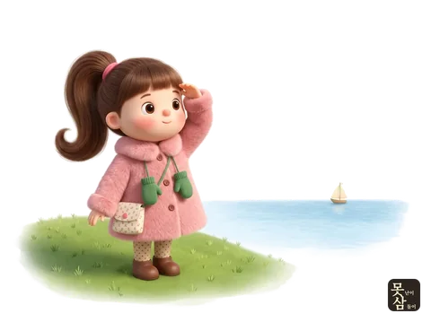
LOOK내가 눈길을 보낸다SAY말을 입 밖으로 낸다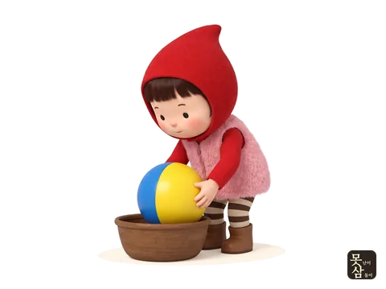
PUT들고 있던 걸 자리에 놓는다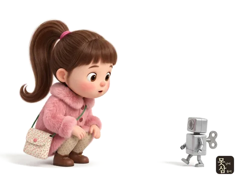
WORK움직여서 결과를 낸다짝 쪽
헷갈리는 셋을 한 번에영어 잘하는 데 필요한 단어는 몇 개?
단어장 한 권을 끝내면 더 두꺼운 다음 권을 펴게 됩니다. 외운 단어가 늘면 영어가 풀릴 거라고 믿으니까요.
그런데 실제로 쓰인 영어를 세어 본 자료가 있습니다. 옥스퍼드 영어 코퍼스입니다. 코퍼스는 진짜 영어 문장을 모아 둔 큰 창고입니다.
이 창고의 문장을 한 단어씩 세면 20억 번이 넘습니다. 그중 절반을 가장 많이 나오는 단어 100개가 채웁니다. 영어 문장에서 아무 단어나 짚으면, 둘에 하나는 이 100개 중 하나라는 말입니다.
그 100개는 어려운 단어가 아닙니다. the, I, have, get, take, on, for. 우리가 이미 아는 단어입니다. 그럼 이 세 문장을 보세요.
get을 「얻다」로만 외웠다면 둘째 문장에서 멈춥니다. 집을 얻었다는 말이 아니니까요. 사전을 펴면 get 아래에 뜻이 줄줄이 적혀 있습니다. 받다, 도착하다, 되다.
우리말로 하나씩 옮겨 외우면 뜻이 여러 개로 갈라져 보입니다. 하지만 단어 안에 든 그림은 하나입니다. get은 「문턱을 넘는 순간」입니다.
선물이 문턱을 넘어 내게 오면 「받았다」가 됩니다. 내가 집 문턱을 넘으면 「도착했다」, 피곤이 내 몸으로 넘어오면 「피곤해졌다」가 됩니다. 단어 하나를 정확히 알았더니 세 문장이 한 번에 풀립니다.
그래서 단어의 개수보다 얼마나 정확히 아느냐가 중요합니다. 가장 많이 쓰는 단어일수록 더 그렇습니다.
이 책은 그 100단어에서 뜻이 여러 개라 헷갈리는 28개를 골랐습니다. 100단어 밖이지만 쓰임이 넓은 off와 put을 더해 모두 30개입니다. 단어 하나에 그림 하나입니다. 이 책의 두 주인공 못난이와 삼돌이가 몸으로 보여 줍니다.
하루 한 단어면 한 달입니다. 새 단어를 더 찾지 않아도 됩니다. 이미 아는 단어를 제대로 만나 보세요.
옥스퍼드 영어 코퍼스 기준이다. 20억 단어가 넘는 자료이고, am·is·are처럼 모양만 다른 말은 be 하나로 센다. 출처는 위키백과 Most common words in English다.